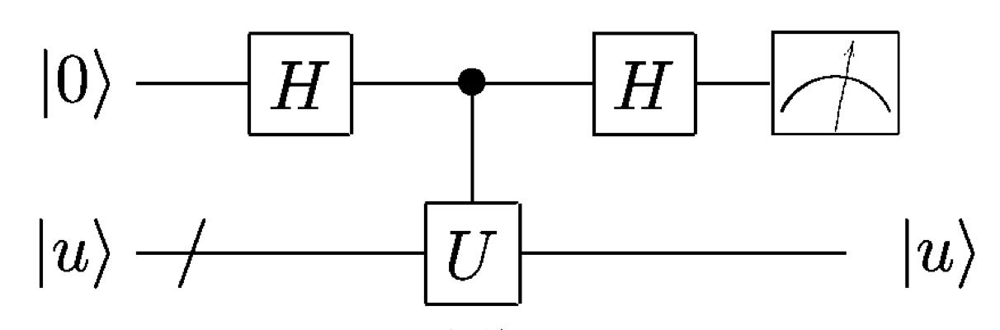

Basic Quantum Circuit Construction and Simulation#
Instructor : Hwajung Kang, Ph.D., Quantum Computational Scientist, IBM Quantum
import numpy as np
import matplotlib.pyplot as plt
from qiskit import *
from qiskit.quantum_info import Pauli
from qiskit.primitives import Sampler, Estimator
from qiskit.visualization import plot_distribution
Samplertakes a quantum circuit or list of circuits (with measurements), and calculates exact quasi-probabilities of bitstrings from quantum circuits by default in ideal conditions.Estimatortakes a quantum circuit or list of circuits (without mesasurements), and calculates the exact expectation values of quantum circuits and observables by default in ideal conditions.
def myfunc(my_str):
num_str = len(my_str)
ind = num_str - 1 - np.where(np.array(list(my_str)) == '1')[0]
qc = QuantumCircuit(num_str+1, name ='oracle')
qc.cx(ind, num_str)
U = qc.to_gate()
return U
oracle = myfunc('110')
sampler = Sampler()
estimator = Estimator()
Basic Quantum gates#
Single Qubit Operations - X, H and Z#
X gate : Not gate#
\(X = \begin{bmatrix}0 & 1 \\ 1 & 0 \end{bmatrix} , ~~~~~~ XX = I\)
\(X|0\rangle = |1\rangle ~~~~~~~~~ X|1\rangle = |0\rangle \)
qc = QuantumCircuit(1, 1)
qc.x(0)
qc.measure(0, 0)
qc.draw('mpl')
job = sampler.run(qc)
res = job.result()
prob = res.quasi_dists
plot_distribution(prob, figsize=(6, 4))
from qiskit.result import sampled_expectation_value
z_avg = sampled_expectation_value(prob[0], 'z')
print(z_avg)
-1.0
qc.remove_final_measurements()
display(qc.draw('mpl'))
job_exp = estimator.run(qc, Pauli('Z'))
res_exp = job_exp.result()
print(res_exp)
EstimatorResult(values=array([-1.]), metadata=[{}])
qc = QuantumCircuit(1, 1)
qc.x(0)
qc.barrier()
qc.x(0)
qc.measure(0, 0)
qc.draw('mpl') # xx
job = sampler.run(qc)
res = job.result()
prob = res.quasi_dists
plot_distribution(prob, figsize=(6, 4))
H gate : Hadamard gate, create superposition#
\(H = \frac{1}{\sqrt{2}} \begin{bmatrix}1 & 1 \\ 1 & -1 \end{bmatrix} , ~~~~~~ HH = I \)
\(H|0\rangle = \frac{1}{\sqrt{2}}(|0\rangle + |1\rangle) = |+\rangle ~~~~~~~~~ H|1\rangle = \frac{1}{\sqrt{2}}(|0\rangle - |1\rangle) = |-\rangle\)
qc = QuantumCircuit(1, 1)
qc.h(0)
qc.measure(0, 0)
qc.draw('mpl')
job = sampler.run(qc)
res = job.result()
prob = res.quasi_dists
plot_distribution(prob, figsize=(6, 4))
qc = QuantumCircuit(1, 1)
qc.x(0)
qc.barrier()
qc.h(0)
qc.measure(0, 0)
qc.draw('mpl')
job = sampler.run(qc)
res = job.result()
prob = res.quasi_dists
plot_distribution(prob, figsize=(6, 4))
qc = QuantumCircuit(1, 1)
qc.h(0)
qc.h(0)
qc.measure(0, 0)
qc.draw('mpl')
job = sampler.run(qc)
res = job.result()
prob = res.quasi_dists
plot_distribution(prob, figsize=(6, 4))
Z gate : create relative phase \(\pi\)#
\(Z = \begin{bmatrix}1 & 0 \\ 0 & -1 \end{bmatrix} , ~~~~~~ ZZ=I \)
\(Z|0\rangle = |0\rangle ~~~~~~~~~ Z|1\rangle = e^{i\pi} |1\rangle = - |1\rangle \)
qc_z = QuantumCircuit(1, 1)
qc_z.h(0)
qc_z.z(0)
qc_z.h(0)
qc_z.measure(0, 0)
qc_z.draw('mpl')
job = sampler.run(qc_z)
res = job.result()
prob = res.quasi_dists
plot_distribution(prob, figsize=(6, 4))
CX gate#
\({CX} = \begin{bmatrix} 1 & 0 & 0 & 0 \\ 0 & 1 & 0 & 0 \\ 0 & 0 & 0 & 1 \\ 0 & 0 & 1 & 0 \\ \end{bmatrix}\)
\(CX|00\rangle = |00\rangle ~~~~~~~~~ CX|01\rangle = |01\rangle ~~~~~~~~~ CX|10\rangle = |11\rangle ~~~~~~~~~ CX|11\rangle= |10\rangle ~~~~~~~~~\)
qc_cx = QuantumCircuit(2)
# input
#qc_cx.x(0)
#qc_cx.x(1)
#qc_cx.x(range(2))
# cnot
qc_cx.cx(1, 0)
qc_cx.measure_all()
qc_cx.draw('mpl')
prob = sampler.run(qc_cx).result().quasi_dists[0].binary_probabilities()
plot_distribution(prob)
Bell state#
qc_bell = QuantumCircuit(2)
qc_bell.h(1)
qc_bell.cx(1, 0)
qc_bell.measure_all()
qc_bell.draw('mpl')
prob_bell = sampler.run(qc_bell).result().quasi_dists[0].binary_probabilities()
plot_distribution(prob_bell)
Hands-on exercise 1.
Compute the expectation values of 'ZZ' and 'XX' observables for the Bell state.
## your code goes here
Quntum Algorithm#
angles = np.linspace(0, 8*np.pi, 200)
# sending a circuit as one job at a time
prob1 = []
for ang in angles:
qc = QuantumCircuit(1, 1)
qc.h(0)
qc.p(ang, 0)
qc.h(0)
qc.measure(0, 0)
prob = sampler.run(qc).result().quasi_dists
if 1 in prob[0]:
prob1.append(prob[0][1])
else:
prob1.append(0)
qc.draw('mpl')
## sending the list of circuits to a backend as one job
qc_all = []
for ang in angles:
qc = QuantumCircuit(1, 1)
qc.h(0)
qc.p(ang, 0)
qc.h(0)
qc.measure(0, 0)
qc_all.append(qc)
probs = sampler.run(qc_all).result().quasi_dists
prob1 = []
for prob in probs:
if 1 in prob:
prob1.append(prob[1])
else:
prob1.append(0)
#qc_all[2].draw('mpl')
fig, ax = plt.subplots(figsize=(6, 4))
ax.plot(angles, prob1, '.')
ax.set_xlabel('$\\theta$')
ax.set_ylabel('Prob_1');
Phase Kick-back#

Ex1 - Phase Gate#
prob1_phase = []
qc_all = []
for ang in angles:
qc = QuantumCircuit(2, 1)
qc.h(0)
qc.x(1)
qc.cp(ang, 0, 1)
qc.h(0)
qc.measure(0, 0)
qc_all.append(qc)
probs = sampler.run(qc_all).result().quasi_dists
for prob in probs:
if 1 in prob:
prob1_phase.append(prob[1])
else:
prob1_phase.append(0)
qc_all[-1].draw('mpl')
fig, ax = plt.subplots(figsize=(6, 4))
ax.plot(angles, prob1_phase, '.')
ax.set_xlabel('$\\theta$')
ax.set_ylabel('Prob1_phase');
Hands-on exercise 2.
Build a quantum circuit showing interferenece using phase kickback similar to the above two examples but with a `ry` gate. Execute the circuit on the simulator and plot the result.
## Your code goes here
Bernstein-Vazirani#
\(f:\{0, 1\}^n \rightarrow \{0, 1\}\) where \(f(x) = x\cdot a~(mod2)\) with \(a \in \{0, 1\}^n\)
Find \(a\) where \(n = 3\).
def BV(U):
num_str = U.num_qubits - 1
qc = QuantumCircuit(num_str + 1, num_str)
qc.x(num_str)
qc.h(range(num_str + 1))
qc.barrier()
qc.append(U, range(num_str+1))
qc.barrier()
qc.h(range(num_str))
qc.measure(range(num_str), range(num_str))
return qc
method1 - classical#
num_q = oracle.num_qubits
num_inp = num_q - 1
for ind in range(num_inp):
qc = QuantumCircuit(num_q, 1)
qc.x(ind)
qc.append(oracle, range(num_q))
qc.measure(num_q-1, 0)
print(qc)
prob = sampler.run(qc).result().quasi_dists
print(prob)
print(prob[0].keys())
print('\n')
┌───┐┌─────────┐
q_0: ┤ X ├┤0 ├───
└───┘│ │
q_1: ─────┤1 ├───
│ oracle │
q_2: ─────┤2 ├───
│ │┌─┐
q_3: ─────┤3 ├┤M├
└─────────┘└╥┘
c: 1/═════════════════╩═
0
[{0: 1.0}]
dict_keys([0])
┌─────────┐
q_0: ─────┤0 ├───
┌───┐│ │
q_1: ┤ X ├┤1 ├───
└───┘│ oracle │
q_2: ─────┤2 ├───
│ │┌─┐
q_3: ─────┤3 ├┤M├
└─────────┘└╥┘
c: 1/═════════════════╩═
0
[{1: 1.0}]
dict_keys([1])
┌─────────┐
q_0: ─────┤0 ├───
│ │
q_1: ─────┤1 ├───
┌───┐│ oracle │
q_2: ┤ X ├┤2 ├───
└───┘│ │┌─┐
q_3: ─────┤3 ├┤M├
└─────────┘└╥┘
c: 1/═════════════════╩═
0
[{1: 1.0}]
dict_keys([1])
method2 - quantum#
BV(oracle).draw('mpl')
probs = sampler.run(BV(oracle)).result().quasi_dists[0].binary_probabilities()
print(probs)
{'110': 0.9999999999999988}
BV(oracle).decompose().draw('mpl')
Hands-on exercise 3.
Build your own quantum circuit implementing the Bernstein-Vazirani algorithm for the secret string a=11001. Simulate the circuit and print the result.
## your code goes here
Useful tools#
Circuit Properties#
print('Number of qubits:{}'.format(mybv.num_qubits))
print('Width of the cricuit: {}'.format(mybv.width()))
print('Number of nonlocal gates: {}\n'.format(mybv.num_nonlocal_gates()))
print('Number of quantum operations:\n{}'.format(mybv.count_ops()))
Number of qubits:6
Width of the cricuit: 11
Number of nonlocal gates: 3
Number of quantum operations:
OrderedDict([('h', 12), ('measure', 5), ('cx', 3), ('barrier', 2), ('x', 1)])
Statevector Simulation#
from qiskit.quantum_info import Statevector
qc = QuantumCircuit(2)
st0 = Statevector.from_instruction(qc)
qc.h(0)
st1 = Statevector.from_instruction(qc)
qc.cnot(0, 1)
st2 = Statevector.from_instruction(qc)
print(st0, '\n')
print(st1, '\n')
print(st2)
Statevector([1.+0.j, 0.+0.j, 0.+0.j, 0.+0.j],
dims=(2, 2))
Statevector([0.70710678+0.j, 0.70710678+0.j, 0. +0.j,
0. +0.j],
dims=(2, 2))
Statevector([0.70710678+0.j, 0. +0.j, 0. +0.j,
0.70710678+0.j],
dims=(2, 2))
import qiskit.tools.jupyter
%qiskit_version_table
%qiskit_copyright
Version Information
| Qiskit Software | Version |
|---|---|
qiskit-terra | 0.24.1 |
qiskit-aer | 0.12.0 |
qiskit-ibmq-provider | 0.20.2 |
qiskit | 0.43.1 |
qiskit-nature | 0.6.0 |
| System information | |
| Python version | 3.11.4 |
| Python compiler | Clang 15.0.7 |
| Python build | main, Jun 10 2023 18:08:41 |
| OS | Darwin |
| CPUs | 10 |
| Memory (Gb) | 32.0 |
| Sun Jul 16 07:08:55 2023 EDT | |
This code is a part of Qiskit
© Copyright IBM 2017, 2023.
This code is licensed under the Apache License, Version 2.0. You may
obtain a copy of this license in the LICENSE.txt file in the root directory
of this source tree or at http://www.apache.org/licenses/LICENSE-2.0.
Any modifications or derivative works of this code must retain this
copyright notice, and modified files need to carry a notice indicating
that they have been altered from the originals.